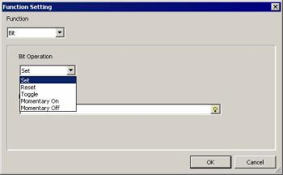
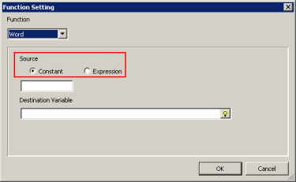
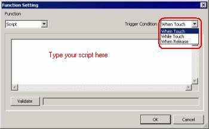
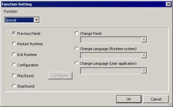
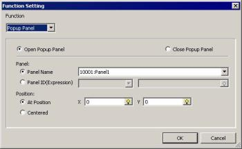

|
|
|
|
|
|
|
|
This section explains the detail settings for the operations you can select in the Function Setting dialog box. You can choose the following operations in Touch animation:
Bit
Word
Script
Special
Popup Panel
Select one of the operations from the Bit Operation menu, and specify the variable to operate in the Destination Variable box.

You can select from these available operations:
|
Operation |
Description |
|
Set |
Turns on the Bit when the switch is touched. |
|
Reset |
Turns off the Bit when the switch is touched. |
|
Toggle |
Toggles on/off the Bit when the switch is touched. |
|
Momentary On |
Turns on the Bit while the switch is touched. When the switch is released, the Bit is turned off. |
|
Momentary Off |
Turns off the Bit while the switch is touched. When the switch is released, the Bit is turned on. |
Select either Constant or Expression under Source, and specify the variable that receives the word value in the Destination Variable field.

You can select one of the following source data:
|
Source |
Description |
|
Constant |
Specify an integer value between -2147483648 and 2147483647 to write to the Destination Variable. |
|
Expression |
Specify an integer or REAL variable or define an expression that results in an integer or real value. The value of the expression specified here is written to the Destination Variable. |
Select Script from the Function menu, then select a Trigger Condition from one of the three options, and type the script to execute. For more information, see Chapter 18, Scripts.

The trigger conditions that you can choose from are:
|
Trigger Condition |
Description |
|
When Touch |
The script runs once when the object is touched. |
|
While Touch |
The script runs repeatedly, while the object is touched. |
|
When Release |
The script runs once when you stop touching the object. |
Select the operation to execute after you touch the switch.

You can select from the following operations:
|
Operation |
Description |
|
Previous Panel |
Returns to the previously displayed panel. |
|
Restart Runtime |
Creates a switch that allows you to restart the Runtime application.
|
|
Exit Runtime |
Exits Vijeo-Designer Runtime. |
|
Configuration |
Opens the Runtime configuration menu. |
|
Play sound |
Plays the specified sound file. Select the sound file to play in the Sound File Setup dialog box, and select a play mode: Play Once or Repeat. For more information, see Section 24.2, Target Machine Sound Files. |
|
Stop Sound |
Stops playing the sound file. |
|
Change Panel |
Displays the specified panel.
|
|
Change Language (Runtime System) |
Changes the language for error messages and the Runtime configuration menu. For more information, see Section 20.2.3, Switch to a Different System Language. |
|
Change Language (User Application) |
Changes the display language to a language that you set up in the Navigator for your user application. For more information, see Section 20.2, Switching Languages. |
Select Popup Panel from the Function list box, and specify the function settings. For more information, see Section 15.1, Creating Popup Windows.
